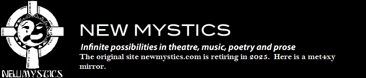

|  | |
| Home Jester-Knight Literature Film Music Visual Art Tributes Submissions Links Contact |
Literature Tim Gaze Biography Tim Gaze works at the very edge of writing. Some of his creations are abstract shapes, which don't even resemble writing. Others resemble distorted writing, or perhaps an unknown script. These 2 works were made by decalcomania, spreading cheap black paint on a surface, then making marks in the wet paint, then printing off onto a piece of paper. A recent tendency in visual poetry has been towards illegibility. Many people call these illegible but still textual works "asemic writing". Christian Dotremont's Logogrammes, Henri Michaux's blot paintings, Adriano Spatola's zeroglyphics & the radical photocopier art by Reed Altemus & Billy Mavreas are all sources of inspiration for my visual creations. My book noology (free to download) is a collection of asemic writing & abstract art, with an electronic glitch sensibility. Neo, my album of home-made futurist sound recordings, will soon be released by Another Hemisphere Records, a Russian net-label. I live simply in the Adelaide Hills of South Australia. Music is a huge influence on my life. Click below to view Tim's work decalc 1 decalc 2 |